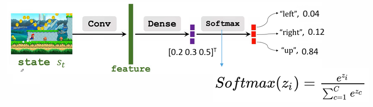
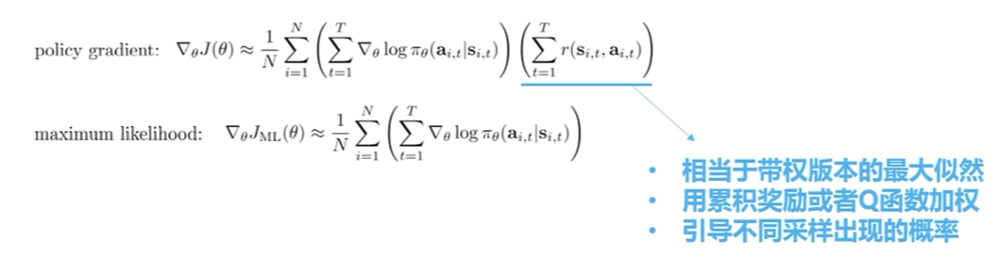
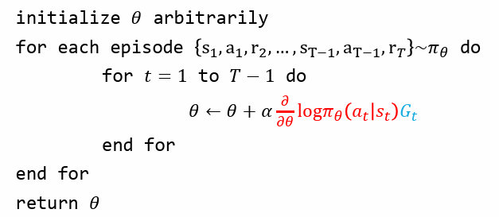
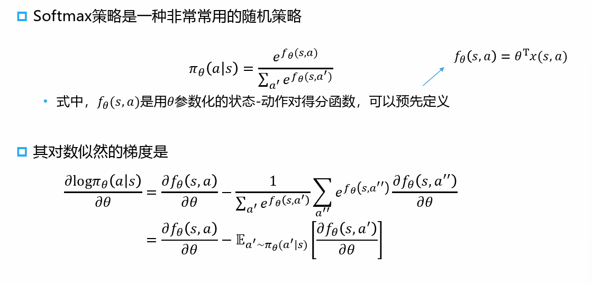
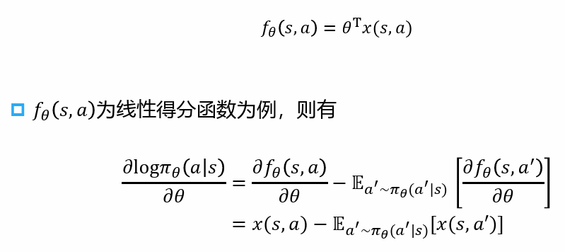
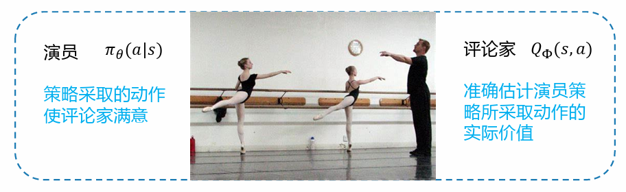

第八章策略梯度算法
第八章 策略梯度算法
策略梯度
模块思路:
- 参数化策略(参数化才能优化, 才能有梯度)
- 提出策略梯度的一般形式
- 针对单步马尔可夫决策过程讨论策略梯度的计算方式
- 从单步过程推广到多步过程
- 从最大似然的角度理解策略梯度(与最大似然法的连续与区别)
- 最终给出了策略梯度的一般形式
参数化策略
- 我们先将策略参数化： \(\pi_\theta (a|s)\)
- 策略可以是确定性的：\(a = \pi_\theta(s)\)
- 策略也可以是随机的: \(\pi_\theta(a|s) = P(a|s;\theta)\)
这里说的"随机"是返回值是有概率分布的
\(\theta\)是策略的可训练参数

策略梯度
- 基于策略梯度算法的优化目标: \(J_\theta = E_s[V_\theta(s)]\)
\[ V_\theta(s) = \sum\limits_{a\in A}\pi_\theta(a|s)Q_\pi(s,a) \]
- 对于随机策略\(\pi_\theta(a|s) =
P(a|s;\theta)\), 因为要最大化\(J_\theta\),
所以可以使用策略梯度上升来更新\(\theta\)
- 对于一个观察到的状态\(s\)
- 更新策略参数的公式为: \(\theta \leftarrow \theta + \beta \cdot \frac{\partial J_\theta(s)}{\partial \theta}\)
\(\beta\)是学习率
理解策略梯度
- 对于随机策略\(\pi_\theta(a|s) = P(a|s;\theta)\)
- 直觉上我们应该
- 降低较低价值/奖励的动作出现的概率
- 提高较高价值/奖励的动作出现的概率
单步马尔科夫决策过程中的策略梯度
现在我们考虑一个简单的单步马尔可夫决策过程：
- 起始状态为\(s \sim d(s)\)
- 决策过程在进行一部决策后结束，获得奖励值为\(r_{sa}\)
此时，策略的期望奖励为： \[ J(\theta) = \mathbb{E}_{\pi_\theta} [r] = \sum\limits_{s\in S}d(s)\sum\limits_{a\in A}\pi_\theta (a|s)r_{sa} \]
\[ \frac{\partial J(\theta)}{\partial \theta} = \sum\limits_{s\in S}d(s)\sum\limits_{a\in A}\frac{\partial \pi_\theta (a|s)}{\partial \theta} r_{sa} \]
显然, 根据上述公式\(\frac{\partial J(\theta)}{\partial \theta}\)可以处理离散有限的动作空间, 而无法处理连续的动作空间.
为了解决这种局限性, 我们将通过似然比对其进行简单转化
似然比
我们先来观察一下\(\frac{\partial \pi_\theta (a|s)}{\partial \theta}\) \[ \frac{\partial \pi_\theta (a|s)}{\partial \theta} = \pi_\theta(a|s) \frac{1}{\pi_\theta(a|s) } \frac{\partial \pi_\theta (a|s)}{\partial \theta} \\ = \pi_\theta(a|s)\frac{\partial \log\pi_\theta (a|s)}{\partial \theta} \] 那么相应的, 对于\(\frac{\partial J(\theta)}{\partial \theta}\)就有: \[ \frac{\partial J(\theta)}{\partial \theta} = \sum\limits_{s\in S}d(s)\sum\limits_{a\in A}\pi_\theta(a|s)\frac{\partial \log\pi_\theta (a|s)}{\partial \theta}r_{sa} \\ = \mathbb{E}_{\pi_\theta}[\frac{\partial \log\pi_\theta (a|s)}{\partial \theta}r_{sa}] \]
因为我们将梯度的计算转化为期望的形式, 我们就可以通过采样来对其进行估算,
并且转化为期望形式后, 我们也可以将其应用于连续的动作空间(毕竟不管是什么动作空间, 总会有期望吧)
策略梯度定理
以上, 我是对单步决策过程进行了讨论, 当然, 真实的情况中我们一定是需要面对多步的情况的
那我们就可以基于以上的单步公式, 推出多步情况下的公式: \[ \frac{\partial J(\theta)}{\partial \theta} = \mathbb{E}_{\pi_\theta}[\frac{\partial \log\pi_\theta (a|s)}{\partial \theta} Q^{\pi_\theta}(s,a)] \]
没错, 我们这里就是简单的拿动作价值函数$ Q^{}(s,a)\(替换了\)r{sa}$
注意, 既然你这么用了, 那就代表着你的策略需要可微
这个替换是不太严谨的, 如果你想看严格的推到, 请参考Rich Sutton's Reinforcement Learning: An Introduction 第13章
从最大似然的角度理解策略梯度

因此策略梯度又被称为带权似然
蒙特卡洛策略梯度(REINFORCE)
现在我们有了策略梯度的一般形式, 我们来介绍一个具体的算法
\[ \frac{\partial J(\theta)}{\partial \theta} = \mathbb{E}_{\pi_\theta}[\frac{\partial \log\pi_\theta (a|s)}{\partial \theta} Q^{\pi_\theta}(s,a)] \]
我们有了一个一般形式, 那么符合直觉的, 只要我们知道如何计算\(\frac{\partial \log\pi_\theta (a|s)}{\partial \theta}\)和$ Q^{_}(s,a)$就能优化我们的策略了.
如何计算\(Q^{\pi_\theta}(s,a)\)
我们通过蒙特卡洛采样的方法来计算\(Q^{\pi_\theta}(s,a)\), 即利用累计奖励值\(G_t\)作为\(Q^{\pi_\theta}(s,a)\)的无偏采样: \[ \Delta\theta_t = \alpha \frac{\partial \log \pi_\theta(a_t|s_t)}{\partial \theta} G_t \]

如何计算\(\frac{\partial \log\pi_\theta (a|s)}{\partial \theta}\)
对数似然的计算与具体的参数化方法有关, 我们假定使用线性参数化方法, 并且用Softmax来得到最终输出, 此时有:


REINFORCE算法总结
- REINFORCE算法的提出目标是更新策略参数\(\theta\), 寻找对应于最有策略的一组参数, 更新公式为\(\theta \leftarrow \theta + \beta \cdot \frac{\partial J_\theta(s)}{\partial \theta}\), 经过简单转化我们得到了$ $的一般形式:
\[ \frac{\partial J(\theta)}{\partial \theta} = \mathbb{E}_{\pi_\theta}[\frac{\partial \log\pi_\theta (a|s)}{\partial \theta} Q^{\pi_\theta}(s,a)] \]
- REINFORCE算法利用\(G_t\)作为\(Q^{\pi_\theta}(s,a)\)的无偏采样, 从而利用随机梯度上升更新参数\(\theta\)
\[ \Delta \theta_t = \alpha \frac{\partial \log \pi_\theta(a_t|s_t)}{\partial \theta} G_t \]
\(\alpha \frac{\partial \log \pi_\theta(a_t|s_t)}{\partial \theta}\)需要根据具体参数化方法进行推算
演员评论家算法
REINFOCE算法存在的问题
- 基于片段式数据的任务
- 任务必须要有终止状态
- 低数据利用率
- 需要大量的训练数据
- 高训练方差(最重要的缺陷)
- 从单个或多个片段中采样到的值函数具有很高的方差
Actor-Critic
- Actor-Critic的思想:
- 建立一个可训练的值函数\(Q_\upphi\)
- 演员和评论家

- 评论家: \(Q_\upphi(s,a)\)
- 学会准确估计演员策略的动作价值
\[ Q_\upphi(s,a) \simeq r(s,a) + \gamma \mathbb{E}_{s' \sim p(s' |s,a), a' \sim \pi_\theta(a'|s')}[Q\upphi (s',a')] \]
- 演员: \(\pi_\theta(a|s)\)
- 学会采取critic满意的动作
\[ J(\theta) = \mathbb{E}_{s\sim p,\pi_\theta}[\pi_\theta(a|s)Q_\upphi(s,a)] \]
\[ \frac{\partial J(\theta)}{\partial \theta} = \mathbb{E}_{\pi_\theta}[\frac{\partial \log \pi_\theta (a|s)}{\partial \theta} Q_\upphi (s,a)] \]
训练过程
- 学习评论家Critic: \(Q_\upphi(s,a)\)和演员Actor: \(\pi_\theta(a|S)\)的参数
- 训练过程: 更新参数\(\upphi\)和\(\theta\)
- 观察导状态\(s_t\)
- 利用当前的策略\(\pi_\theta(a|s)\)采样动作\(a_t\)
- 利用\(a_t\)与环境交互获得下一个状态\(s_{t+1}\)和奖励\(r_t\)
- 使用TD更新评论家网络参数\(\upphi\)
- 使用策略梯度更新策略参数\(\theta\)
Actor和Critic的角色
- 训练时
- 智能体由策略控制与环境交互采集数据
- 评论家网络为演员策略的更新提供监督信息
- 部署时
- 智能体由最终得到的策略进行控制
- 评论家网络不再使用
A2C: Advantageous Actor-Critic
思想: 通过减去一个基线（baseline）函数来使得评论家的打分有正有负
- 更多的信息指导: 降低较差动作的概率, 提高较优动作的概率(之前面对只有正值奖励的环境, 没有办法做到降低较差动作的概率)
- 进一步降低方差
我们是通过优势函数来达到目的的: \[ A^\pi (s,a) = Q^\pi (s,a) - V^\pi (s) \]
\(V^\pi(s)\)一定程度上相当于\(Q^\pi(s,a)\)的均值
那么引入\(A^\pi(s,a)\)是否意味着我们需要同时拟合一个\(V^\pi(s,a)\)和一个\(Q^\pi(s,a)\)呢?
不用, 我们可以进行简化
先来看状态动作值函数: \[ Q^\pi(s,a) = r(s,a ) + \gamma \mathbb{E}_{s'\sim p(s'|s,a), a'\sim \pi_\theta(a'|s')}[Q_\upphi(s',a')]\\ =r(s,a) + \gamma \mathbb{E}_{s'\sim p(s'|s,a)}[V^\pi(s')] \]
就像我们之前说的: \(V^\pi(s)\)一定程度上相当于\(Q^\pi(s,a)\)的均值
所以我们在A2C方法下其实只需要拟合状态价值函数即可: \[ A^\pi(s,a) = Q^\pi(s,a) - V^\pi(s)\\=r(s,a) + \gamma \mathbb{E}_{s' \sim p(s'|s,a)}[V^\pi(s') - V^\pi(s)] \\ \simeq r(s,a) + \gamma (V^\pi(s') - V^\pi(s)) \]